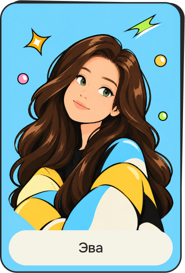
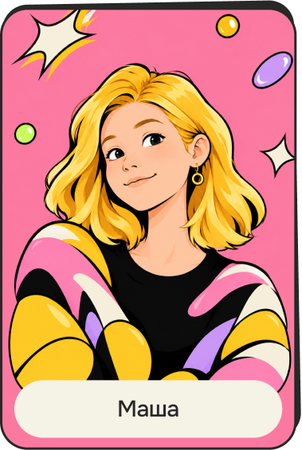
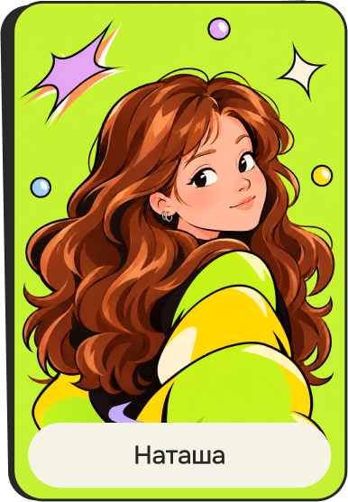

Физика слишком
сложная для тебя
Ну ты же
девочка!
Не твоё
Это интерактивный сайт-исследование о том, как родители и педагоги — часто неосознанно — влияют на выбор профессии девушками
Почему мы сделали «Не твоё»
Мы заметили, что большинство проектов о женщинах в STEM работают с девушками: показывают успешные истории, дают ролевые модели, вдохновляют. Но этого недостаточно. Потому что выбор профессии формируется задолго до того, как девушка начинает его осознавать.
И формируют его — часто неосознанно — те, кто рядом: родители, педагоги, окружение. Мы решили работать с теми, кто влияет, а не только с теми, на кого влияют. Не обвинять, а показывать механизм. Не давать готовых решений, а давать возможность увидеть себя со стороны.
Это для меня
Формат проекта
Мы не рассказываем истории успеха и не даём профориентацию. Мы показываем причинно-следственную цепочку: как повседневные слова, оценки и ожидания взрослых формируют у девушки представление о том, какие профессии ей «подходят».
Наш основной инструмент — интерактивная игра-расклад. Игрок проходит путь девушки от детства до выбора профессии от первого лица: делает её выборы, слышит реакции взрослых и видит, как интерес превращается в «это не для меня».
Мы опираемся на научные исследования и статистику:
- OECD (2025), Gender Equality in a Changing World
- OECD PISA 2022
- НИУ ВШЭ (2026) — данные о женщинах в науке
- Scholink (2023) — исследование взаимодействия учителей с учениками
- Sadker & Sadker (1994) — классическое исследование гендерного неравенства в классе
Мы не используем реальные истории.
Все персонажи — собирательные.
Мы не работаем с чувствительными данными.
Создательницы
Этот проект — часть нашей исследовательской работы о том, как гендерные стереотипы влияют на профессиональный выбор. Мы верим, что изменение начинается с осознания. Не с обвинений, не с морализаторства — а с возможности увидеть себя со стороны и задать себе вопрос: «А что, если бы я тогда не сказал „это не для тебя“?»


